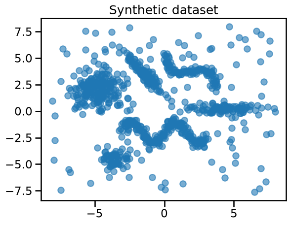
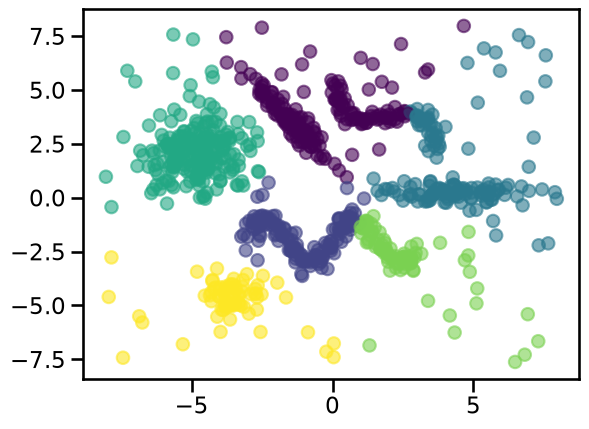
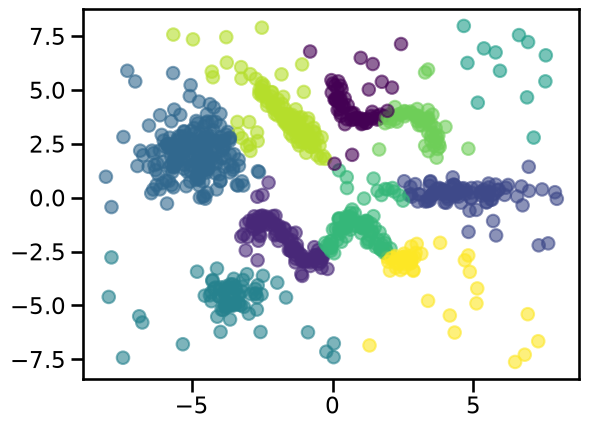
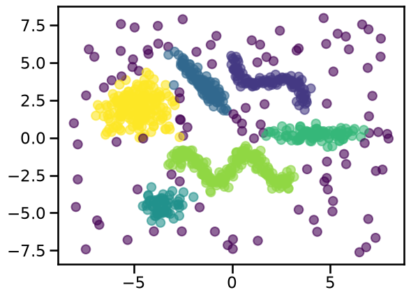

Non-convex clustering using HDBSCAN#
We have previously mentioned that k-means consists of minimizing the samples euclidean distances to their assigned centroid. As a consequence, k-means is more appropriate for clusters that are isotropic and normally distributed (look like spherical blobs). When this assumption is not met, k-means can lead to unstable clustering results that do not qualitatively match the cluster we seek. On possible way is to use a more general variant of k-means named Gaussian Mixture Models (GMM), which allows for elongated clusters with strong correlation between features as explained in this tutorial of the scikit-learn documentation. However, GMM still assumes that clusters are convex, which is not always the case in practice.
In this notebook we introduce another clustering technique named HDBSCAN, an acronym which stands for “Hierarchical Density-Based Spatial Clustering of Applications with Noise” which further allows for non-convex clusters.
Let’s explain each of those terms. HDBSCAN is hierarchical, which means it handles data with clusters nested within each other. The user controls the level in the hierarchy at which clusters are formed.
It is non-parametric, density-based method that does not assume a specific shape or number of clusters. Instead, it automatically finds the clusters based on areas where data points are densely packed together. In other words, it looks for regions of high density (many data points close to each other) and forms clusters around them. This allows it to find clusters of varying shapes and sizes.
HDBSCAN assigns a label of -1 to points that do not have enough neighbors (low density) to be considered part of a cluster or are too far from any dense region (too isolated from core points). They are usually considered to be noise.
Note
If you want more information on how HDBSCAN works, you can refer to the hdbscan documentation or watch this youtube video.
Let’s first illustrate those concepts with a toy dataset generated using the code below. You do not need to understand the details of the data generation process, and instead pay attention to the resulting scatter plot.
import numpy as np
import matplotlib.pyplot as plt
from sklearn.datasets import make_blobs
rng = np.random.default_rng(1)
centers = np.array([[-4.8, 2.0], [-3.5, -4.5]])
X_gaussian, _ = make_blobs(
n_samples=[200, 60],
centers=centers,
cluster_std=[1.0, 0.5],
random_state=42,
)
# Two anisotropic blobs
centers = np.array([[1.0, 5.1], [3.0, 0.9]])
X_aniso_base, y_aniso_base = make_blobs(
n_samples=200, centers=centers, random_state=0
)
# Define two different transformations
transformation_0 = np.array([[0.6, -0.6], [-0.4, 0.8]])
transformation_1 = np.array([[1.5, 0], [0, 0.3]])
# Apply different transformations to each blob
X_aniso = np.copy(X_aniso_base)
X_aniso[y_aniso_base == 0] = np.dot(
X_aniso_base[y_aniso_base == 0], transformation_0
)
X_aniso[y_aniso_base == 1] = np.dot(
X_aniso_base[y_aniso_base == 1], transformation_1
)
def make_wavy_blob(n_samples, shift=0.0, noise=0.2, freq=3):
"Make wavy blobs in feature space"
x = np.linspace(-3, 3, n_samples)
y = np.sin(freq * x) + shift
x += rng.normal(scale=noise, size=n_samples)
y += rng.normal(scale=noise, size=n_samples)
return np.vstack((x, y)).T
X_wave1 = make_wavy_blob(100, shift=4.7, freq=1)
transformation = np.array([[0.6, -0.6], [0.4, 0.8]])
X_wave1 = np.dot(X_wave1, transformation)
X_wave2 = make_wavy_blob(200, shift=-2.0, freq=2)
X_noise = rng.uniform(low=-8, high=8, size=(100, 2)) # background noise
X_all = np.vstack((X_gaussian, X_aniso, X_wave1, X_wave2, X_noise))
plt.scatter(X_all[:, 0], X_all[:, 1], alpha=0.6)
_ = plt.title("Synthetic dataset")

You can observe that the dataset contains:
four Gaussian blobs with different sizes and densities, some of which are elongated and other more spherical;
two non-convex clusters with wavy shapes;
a background noise of points uniformly distributed in the feature space.
Let’s first try to find a cluster structure using K-means with 6 clusters to match our data generating process.
from sklearn.cluster import KMeans
cluster_labels = KMeans(n_clusters=6, random_state=0).fit_predict(X_all)
_ = plt.scatter(X_all[:, 0], X_all[:, 1], c=cluster_labels, alpha=0.6)

We could try to increase the number of clusters to avoid grouping unrelated points in the same cluster:
cluster_labels = KMeans(n_clusters=10, random_state=0).fit_predict(X_all)
_ = plt.scatter(X_all[:, 0], X_all[:, 1], c=cluster_labels, alpha=0.6)

However, we can observe this cluster assignment divides the high density regions while also grouping unrelated points together. Furthermore, the background noise data points are always assigned to the nearest centroids and thus treated as cluster members. Therefore, adjusting the number of clusters is not enough to get good results in this kind of data.
We can compute the silhouette score for this number of clusters and keep it in mind for the moment.
from sklearn.metrics import silhouette_score
kmeans_score = silhouette_score(X_all, cluster_labels)
print(f"Silhouette score for k-means clusters: {kmeans_score:.3f}")
Silhouette score for k-means clusters: 0.472
Let’s now repeat the experiment using HDBSCAN instead. For this clustering
technique, the most important hyperparameter is min_cluster_size, which
controls the minimum number of samples for a group to be considered a cluster;
groupings smaller than this size are considered as noise.
from sklearn.cluster import HDBSCAN
cluster_labels = HDBSCAN(min_cluster_size=10).fit_predict(X_all)
_ = plt.scatter(X_all[:, 0], X_all[:, 1], c=cluster_labels, alpha=0.6)
/opt/hostedtoolcache/Python/3.11.16/x64/lib/python3.11/site-packages/sklearn/cluster/_hdbscan/hdbscan.py:722: FutureWarning: The default value of `copy` will change from False to True in 1.10. Explicitly set a value for `copy` to silence this warning.
warn(

The clusters found using HDBSCAN better match our intuition of how data points should be grouped. We can compute the corresponding silhouette score:
hdbscan_score = silhouette_score(X_all, cluster_labels)
print(f"Silhouette score for HDBSCAN clusters: {hdbscan_score:.3f}")
Silhouette score for HDBSCAN clusters: 0.383
Notice that this score is lower than the score using k-means, even if HDBSCAN
seems to do a better job when grouping the data points. The reason here is
that points considered as noise (labeled with -1 by HDBSCAN) do not follow a
cluster-like structure. We can test that hypothesis as follows:
mask = cluster_labels != -1 # mask is TRUE for entries that are NOT -1
cluster_labels_filtered = cluster_labels[mask]
X_all_filtered = X_all[mask]
hdbscan_score = silhouette_score(X_all_filtered, cluster_labels_filtered)
print(
f"Silhouette score for HDBSCAN clusters without noise: {hdbscan_score:.3f}"
)
Silhouette score for HDBSCAN clusters without noise: 0.516
In this case we do obtain a better silhouette score, but in general we do not suggest dropping samples labeled as noise.
Also, keep in mind that HDBSCAN does not optimize intra- or inter-cluster distances, which are the basis of the silhouette score. It is then more appropriate to use the silhouette score when clusters are compact and roughly convex. Otherwise, if the clusters are elongated, wavy, or even wrap around other clusters, comparing average distances becomes less meaningful.
Clustering of geospatial data#
Let’s now apply HDBSCAN to a more realistic use-case: the geospatial columns of the California Housing Dataset.
from sklearn.datasets import fetch_california_housing
data, target = fetch_california_housing(return_X_y=True, as_frame=True)
target *= 100 # rescale the target in k$
We can use plotly to first visualize the housing prices across the state of California.
import plotly.express as px
def plot_map(df, color_feature, colorbar_label="cluster label"):
fig = px.scatter_map(
df,
lat="Latitude",
lon="Longitude",
color=color_feature,
zoom=5,
height=600,
labels={"color": colorbar_label},
)
fig.update_layout(
mapbox_style="open-street-map",
mapbox_center={
"lat": df["Latitude"].mean(),
"lon": df["Longitude"].mean(),
},
margin={"r": 0, "t": 0, "l": 0, "b": 0},
)
return fig.show(renderer="notebook")
fig = plot_map(data, target, colorbar_label="price (k$)")
---------------------------------------------------------------------------
ValueError Traceback (most recent call last)
Cell In[9], line 25
21 )
22 return fig.show(renderer="notebook")
23
24
---> 25 fig = plot_map(data, target, colorbar_label="price (k$)")
Cell In[9], line 14, in plot_map(df, color_feature, colorbar_label)
10 zoom=5,
11 height=600,
12 labels={"color": colorbar_label},
13 )
---> 14 fig.update_layout(
15 mapbox_style="open-street-map",
16 mapbox_center={
17 "lat": df["Latitude"].mean(),
File /opt/hostedtoolcache/Python/3.11.16/x64/lib/python3.11/site-packages/plotly/graph_objs/_figure.py:217, in Figure.update_layout(self, dict1, overwrite, **kwargs)
213 BaseFigure
214 The Figure object that the update_layout method was called on
215
216 """
--> 217 return super().update_layout(dict1, overwrite, **kwargs)
File /opt/hostedtoolcache/Python/3.11.16/x64/lib/python3.11/site-packages/plotly/basedatatypes.py:1415, in BaseFigure.update_layout(self, dict1, overwrite, **kwargs)
1391 def update_layout(self, dict1=None, overwrite=False, **kwargs):
1392 """
1393 Update the properties of the figure's layout with a dict and/or with
1394 keyword arguments.
(...) 1413 The Figure object that the update_layout method was called on
1414 """
-> 1415 self.layout.update(dict1, overwrite=overwrite, **kwargs)
1416 return self
File /opt/hostedtoolcache/Python/3.11.16/x64/lib/python3.11/site-packages/plotly/basedatatypes.py:5105, in BasePlotlyType.update(self, dict1, overwrite, **kwargs)
5103 with self.figure.batch_update():
5104 BaseFigure._perform_update(self, dict1, overwrite=overwrite)
-> 5105 BaseFigure._perform_update(self, kwargs, overwrite=overwrite)
5106 else:
5107 BaseFigure._perform_update(self, dict1, overwrite=overwrite)
File /opt/hostedtoolcache/Python/3.11.16/x64/lib/python3.11/site-packages/plotly/basedatatypes.py:3859, in BaseFigure._perform_update(plotly_obj, update_obj, overwrite)
3857 err = _check_path_in_prop_tree(plotly_obj, key, error_cast=ValueError)
3858 if err is not None:
-> 3859 raise err
3861 # Convert update_obj to dict
3862 # --------------------------
3863 if isinstance(update_obj, BasePlotlyType):
ValueError: Invalid property specified for object of type plotly.graph_objs.Layout: 'mapbox'
Did you mean "map"?
Valid properties:
activeselection
:class:`plotly.graph_objects.layout.Activeselection`
instance or dict with compatible properties
activeshape
:class:`plotly.graph_objects.layout.Activeshape`
instance or dict with compatible properties
annotations
A tuple of
:class:`plotly.graph_objects.layout.Annotation`
instances or dicts with compatible properties
annotationdefaults
When used in a template (as
layout.template.layout.annotationdefaults), sets the
default property values to use for elements of
layout.annotations
autosize
Determines whether or not a layout width or height that
has been left undefined by the user is initialized on
each relayout. Note that, regardless of this attribute,
an undefined layout width or height is always
initialized on the first call to plot.
autotypenumbers
Using "strict" a numeric string in trace data is not
converted to a number. Using *convert types* a numeric
string in trace data may be treated as a number during
automatic axis `type` detection. This is the default
value; however it could be overridden for individual
axes.
barcornerradius
Sets the rounding of bar corners. May be an integer
number of pixels, or a percentage of bar width (as a
string ending in %).
bargap
Sets the gap (in plot fraction) between bars of
adjacent location coordinates.
bargroupgap
Sets the gap (in plot fraction) between bars of the
same location coordinate.
barmode
Determines how bars at the same location coordinate are
displayed on the graph. With "stack", the bars are
stacked on top of one another With "relative", the bars
are stacked on top of one another, with negative values
below the axis, positive values above With "group", the
bars are plotted next to one another centered around
the shared location. With "overlay", the bars are
plotted over one another, you might need to reduce
"opacity" to see multiple bars.
barnorm
Sets the normalization for bar traces on the graph.
With "fraction", the value of each bar is divided by
the sum of all values at that location coordinate.
"percent" is the same but multiplied by 100 to show
percentages.
boxgap
Sets the gap (in plot fraction) between boxes of
adjacent location coordinates. Has no effect on traces
that have "width" set.
boxgroupgap
Sets the gap (in plot fraction) between boxes of the
same location coordinate. Has no effect on traces that
have "width" set.
boxmode
Determines how boxes at the same location coordinate
are displayed on the graph. If "group", the boxes are
plotted next to one another centered around the shared
location. If "overlay", the boxes are plotted over one
another, you might need to set "opacity" to see them
multiple boxes. Has no effect on traces that have
"width" set.
calendar
Sets the default calendar system to use for
interpreting and displaying dates throughout the plot.
clickanywhere
If true, `plotly_click` events will fire for any click
position within the plot area, not just over traces.
When clicking where there is no trace data, the event
will have an empty `points` array but will include
`xvals` and `yvals` with click coordinates in data
space, and `xPixel` and `yPixel` with click coordinates
in pixels, relative to the top-left corner of the graph
div.
clickmode
Determines the mode of single click interactions.
"event" is the default value and emits the
`plotly_click` event. In addition this mode emits the
`plotly_selected` event in drag modes "lasso" and
"select", but with no event data attached (kept for
compatibility reasons). The "select" flag enables
selecting single data points via click. This mode also
supports persistent selections, meaning that pressing
Shift while clicking, adds to / subtracts from an
existing selection. "select" with `hovermode`: "x" can
be confusing, consider explicitly setting `hovermode`:
"closest" when using this feature. Selection events are
sent accordingly as long as "event" flag is set as
well. When the "event" flag is missing, `plotly_click`
and `plotly_selected` events are not fired.
coloraxis
:class:`plotly.graph_objects.layout.Coloraxis` instance
or dict with compatible properties
colorscale
:class:`plotly.graph_objects.layout.Colorscale`
instance or dict with compatible properties
colorway
Sets the default trace colors.
computed
Placeholder for exporting automargin-impacting values
namely `margin.t`, `margin.b`, `margin.l` and
`margin.r` in "full-json" mode.
datarevision
If provided, a changed value tells `Plotly.react` that
one or more data arrays has changed. This way you can
modify arrays in-place rather than making a complete
new copy for an incremental change. If NOT provided,
`Plotly.react` assumes that data arrays are being
treated as immutable, thus any data array with a
different identity from its predecessor contains new
data.
dragmode
Determines the mode of drag interactions. "select" and
"lasso" apply only to scatter traces with markers or
text. "orbit" and "turntable" apply only to 3D scenes.
editrevision
Controls persistence of user-driven changes in
`editable: true` configuration, other than trace names
and axis titles. Defaults to `layout.uirevision`.
extendfunnelareacolors
If `true`, the funnelarea slice colors (whether given
by `funnelareacolorway` or inherited from `colorway`)
will be extended to three times its original length by
first repeating every color 20% lighter then each color
20% darker. This is intended to reduce the likelihood
of reusing the same color when you have many slices,
but you can set `false` to disable. Colors provided in
the trace, using `marker.colors`, are never extended.
extendiciclecolors
If `true`, the icicle slice colors (whether given by
`iciclecolorway` or inherited from `colorway`) will be
extended to three times its original length by first
repeating every color 20% lighter then each color 20%
darker. This is intended to reduce the likelihood of
reusing the same color when you have many slices, but
you can set `false` to disable. Colors provided in the
trace, using `marker.colors`, are never extended.
extendpiecolors
If `true`, the pie slice colors (whether given by
`piecolorway` or inherited from `colorway`) will be
extended to three times its original length by first
repeating every color 20% lighter then each color 20%
darker. This is intended to reduce the likelihood of
reusing the same color when you have many slices, but
you can set `false` to disable. Colors provided in the
trace, using `marker.colors`, are never extended.
extendsunburstcolors
If `true`, the sunburst slice colors (whether given by
`sunburstcolorway` or inherited from `colorway`) will
be extended to three times its original length by first
repeating every color 20% lighter then each color 20%
darker. This is intended to reduce the likelihood of
reusing the same color when you have many slices, but
you can set `false` to disable. Colors provided in the
trace, using `marker.colors`, are never extended.
extendtreemapcolors
If `true`, the treemap slice colors (whether given by
`treemapcolorway` or inherited from `colorway`) will be
extended to three times its original length by first
repeating every color 20% lighter then each color 20%
darker. This is intended to reduce the likelihood of
reusing the same color when you have many slices, but
you can set `false` to disable. Colors provided in the
trace, using `marker.colors`, are never extended.
font
Sets the global font. Note that fonts used in traces
and other layout components inherit from the global
font.
funnelareacolorway
Sets the default funnelarea slice colors. Defaults to
the main `colorway` used for trace colors. If you
specify a new list here it can still be extended with
lighter and darker colors, see
`extendfunnelareacolors`.
funnelgap
Sets the gap (in plot fraction) between bars of
adjacent location coordinates.
funnelgroupgap
Sets the gap (in plot fraction) between bars of the
same location coordinate.
funnelmode
Determines how bars at the same location coordinate are
displayed on the graph. With "stack", the bars are
stacked on top of one another With "group", the bars
are plotted next to one another centered around the
shared location. With "overlay", the bars are plotted
over one another, you might need to reduce "opacity" to
see multiple bars.
geo
:class:`plotly.graph_objects.layout.Geo` instance or
dict with compatible properties
grid
:class:`plotly.graph_objects.layout.Grid` instance or
dict with compatible properties
height
Sets the plot's height (in px).
hiddenlabels
hiddenlabels is the funnelarea & pie chart analog of
visible:'legendonly' but it can contain many labels,
and can simultaneously hide slices from several
pies/funnelarea charts
hoveranywhere
If true, `plotly_hover` events will fire for any cursor
position within the plot area, not just over traces.
When the cursor is not over a trace, the event will
have an empty `points` array but will include `xvals`
and `yvals` with cursor coordinates in data space, and
`xPixel` and `yPixel` with cursor coordinates in
pixels, relative to the top-left corner of the graph
div. A `plotly_unhover` event fires when the cursor
leaves the plot area.
hoverdistance
Sets the default distance (in pixels) to look for data
to add hover labels (-1 means no cutoff, 0 means no
looking for data). This is only a real distance for
hovering on point-like objects, like scatter points.
For area-like objects (bars, scatter fills, etc)
hovering is on inside the area and off outside, but
these objects will not supersede hover on point-like
objects in case of conflict.
hoverlabel
:class:`plotly.graph_objects.layout.Hoverlabel`
instance or dict with compatible properties
hovermode
Determines the mode of hover interactions. If
"closest", a single hoverlabel will appear for the
"closest" point within the `hoverdistance`. If "x" (or
"y"), multiple hoverlabels will appear for multiple
points at the "closest" x- (or y-) coordinate within
the `hoverdistance`, with the caveat that no more than
one hoverlabel will appear per trace. If *x unified*
(or *y unified*), a single hoverlabel will appear
multiple points at the closest x- (or y-) coordinate
within the `hoverdistance` with the caveat that no more
than one hoverlabel will appear per trace. In this
mode, spikelines are enabled by default perpendicular
to the specified axis. If false, hover interactions are
disabled.
hoversort
Determines the order of items shown in unified hover
labels. If "trace", items are sorted by trace index. If
*value descending*, items are sorted by value from
largest to smallest. If *value ascending*, items are
sorted by value from smallest to largest. Only applies
when `hovermode` is *x unified* or *y unified*.
hoversubplots
Determines expansion of hover effects to other subplots
If "single" just the axis pair of the primary point is
included without overlaying subplots. If "overlaying"
all subplots using the main axis and occupying the same
space are included. If "axis", also include stacked
subplots using the same axis when `hovermode` is set to
"x", *x unified*, "y" or *y unified*.
iciclecolorway
Sets the default icicle slice colors. Defaults to the
main `colorway` used for trace colors. If you specify a
new list here it can still be extended with lighter and
darker colors, see `extendiciclecolors`.
images
A tuple of :class:`plotly.graph_objects.layout.Image`
instances or dicts with compatible properties
imagedefaults
When used in a template (as
layout.template.layout.imagedefaults), sets the default
property values to use for elements of layout.images
legend
:class:`plotly.graph_objects.layout.Legend` instance or
dict with compatible properties
map
:class:`plotly.graph_objects.layout.Map` instance or
dict with compatible properties
margin
:class:`plotly.graph_objects.layout.Margin` instance or
dict with compatible properties
meta
Assigns extra meta information that can be used in
various `text` attributes. Attributes such as the
graph, axis and colorbar `title.text`, annotation
`text` `trace.name` in legend items, `rangeselector`,
`updatemenus` and `sliders` `label` text all support
`meta`. One can access `meta` fields using template
strings: `%{meta[i]}` where `i` is the index of the
`meta` item in question. `meta` can also be an object
for example `{key: value}` which can be accessed
%{meta[key]}.
minreducedheight
Minimum height of the plot with margin.automargin
applied (in px)
minreducedwidth
Minimum width of the plot with margin.automargin
applied (in px)
modebar
:class:`plotly.graph_objects.layout.Modebar` instance
or dict with compatible properties
newselection
:class:`plotly.graph_objects.layout.Newselection`
instance or dict with compatible properties
newshape
:class:`plotly.graph_objects.layout.Newshape` instance
or dict with compatible properties
paper_bgcolor
Sets the background color of the paper where the graph
is drawn.
piecolorway
Sets the default pie slice colors. Defaults to the main
`colorway` used for trace colors. If you specify a new
list here it can still be extended with lighter and
darker colors, see `extendpiecolors`.
plot_bgcolor
Sets the background color of the plotting area in-
between x and y axes.
polar
:class:`plotly.graph_objects.layout.Polar` instance or
dict with compatible properties
scattergap
Sets the gap (in plot fraction) between scatter points
of adjacent location coordinates. Defaults to `bargap`.
scattermode
Determines how scatter points at the same location
coordinate are displayed on the graph. With "group",
the scatter points are plotted next to one another
centered around the shared location. With "overlay",
the scatter points are plotted over one another, you
might need to reduce "opacity" to see multiple scatter
points.
scene
:class:`plotly.graph_objects.layout.Scene` instance or
dict with compatible properties
selectdirection
When `dragmode` is set to "select", this limits the
selection of the drag to horizontal, vertical or
diagonal. "h" only allows horizontal selection, "v"
only vertical, "d" only diagonal and "any" sets no
limit.
selectionrevision
Controls persistence of user-driven changes in selected
points from all traces.
selections
A tuple of
:class:`plotly.graph_objects.layout.Selection`
instances or dicts with compatible properties
selectiondefaults
When used in a template (as
layout.template.layout.selectiondefaults), sets the
default property values to use for elements of
layout.selections
separators
Sets the decimal and thousand separators. For example,
*. * puts a '.' before decimals and a space between
thousands. In English locales, dflt is ".," but other
locales may alter this default.
shapes
A tuple of :class:`plotly.graph_objects.layout.Shape`
instances or dicts with compatible properties
shapedefaults
When used in a template (as
layout.template.layout.shapedefaults), sets the default
property values to use for elements of layout.shapes
showlegend
Determines whether or not a legend is drawn. Default is
`true` if there is a trace to show and any of these: a)
Two or more traces would by default be shown in the
legend. b) One pie trace is shown in the legend. c) One
trace is explicitly given with `showlegend: true`.
sliders
A tuple of :class:`plotly.graph_objects.layout.Slider`
instances or dicts with compatible properties
sliderdefaults
When used in a template (as
layout.template.layout.sliderdefaults), sets the
default property values to use for elements of
layout.sliders
smith
:class:`plotly.graph_objects.layout.Smith` instance or
dict with compatible properties
spikedistance
Sets the default distance (in pixels) to look for data
to draw spikelines to (-1 means no cutoff, 0 means no
looking for data). As with hoverdistance, distance does
not apply to area-like objects. In addition, some
objects can be hovered on but will not generate
spikelines, such as scatter fills.
sunburstcolorway
Sets the default sunburst slice colors. Defaults to the
main `colorway` used for trace colors. If you specify a
new list here it can still be extended with lighter and
darker colors, see `extendsunburstcolors`.
template
Default attributes to be applied to the plot. This
should be a dict with format: `{'layout':
layoutTemplate, 'data': {trace_type: [traceTemplate,
...], ...}}` where `layoutTemplate` is a dict matching
the structure of `figure.layout` and `traceTemplate` is
a dict matching the structure of the trace with type
`trace_type` (e.g. 'scatter'). Alternatively, this may
be specified as an instance of
plotly.graph_objs.layout.Template. Trace templates are
applied cyclically to traces of each type. Container
arrays (eg `annotations`) have special handling: An
object ending in `defaults` (eg `annotationdefaults`)
is applied to each array item. But if an item has a
`templateitemname` key we look in the template array
for an item with matching `name` and apply that
instead. If no matching `name` is found we mark the
item invisible. Any named template item not referenced
is appended to the end of the array, so this can be
used to add a watermark annotation or a logo image, for
example. To omit one of these items on the plot, make
an item with matching `templateitemname` and `visible:
false`.
ternary
:class:`plotly.graph_objects.layout.Ternary` instance
or dict with compatible properties
title
:class:`plotly.graph_objects.layout.Title` instance or
dict with compatible properties
transition
Sets transition options used during Plotly.react
updates.
treemapcolorway
Sets the default treemap slice colors. Defaults to the
main `colorway` used for trace colors. If you specify a
new list here it can still be extended with lighter and
darker colors, see `extendtreemapcolors`.
uirevision
Used to allow user interactions with the plot to
persist after `Plotly.react` calls that are unaware of
these interactions. If `uirevision` is omitted, or if
it is given and it changed from the previous
`Plotly.react` call, the exact new figure is used. If
`uirevision` is truthy and did NOT change, any
attribute that has been affected by user interactions
and did not receive a different value in the new figure
will keep the interaction value. `layout.uirevision`
attribute serves as the default for `uirevision`
attributes in various sub-containers. For finer control
you can set these sub-attributes directly. For example,
if your app separately controls the data on the x and y
axes you might set `xaxis.uirevision=*time*` and
`yaxis.uirevision=*cost*`. Then if only the y data is
changed, you can update `yaxis.uirevision=*quantity*`
and the y axis range will reset but the x axis range
will retain any user-driven zoom.
uniformtext
:class:`plotly.graph_objects.layout.Uniformtext`
instance or dict with compatible properties
updatemenus
A tuple of
:class:`plotly.graph_objects.layout.Updatemenu`
instances or dicts with compatible properties
updatemenudefaults
When used in a template (as
layout.template.layout.updatemenudefaults), sets the
default property values to use for elements of
layout.updatemenus
violingap
Sets the gap (in plot fraction) between violins of
adjacent location coordinates. Has no effect on traces
that have "width" set.
violingroupgap
Sets the gap (in plot fraction) between violins of the
same location coordinate. Has no effect on traces that
have "width" set.
violinmode
Determines how violins at the same location coordinate
are displayed on the graph. If "group", the violins are
plotted next to one another centered around the shared
location. If "overlay", the violins are plotted over
one another, you might need to set "opacity" to see
them multiple violins. Has no effect on traces that
have "width" set.
waterfallgap
Sets the gap (in plot fraction) between bars of
adjacent location coordinates.
waterfallgroupgap
Sets the gap (in plot fraction) between bars of the
same location coordinate.
waterfallmode
Determines how bars at the same location coordinate are
displayed on the graph. With "group", the bars are
plotted next to one another centered around the shared
location. With "overlay", the bars are plotted over one
another, you might need to reduce "opacity" to see
multiple bars.
width
Sets the plot's width (in px).
xaxis
:class:`plotly.graph_objects.layout.XAxis` instance or
dict with compatible properties
yaxis
:class:`plotly.graph_objects.layout.YAxis` instance or
dict with compatible properties
Did you mean "map"?
Bad property path:
mapbox_style
^^^^^^
We can try to use K-means to group data points into different spatial regions (irrespective of the housing prices) and visualize the results on a map.
Note that the Geospatial columns are Latitude and Longitude are already
on the same scale so there is no need to standardize them before clustering.
from sklearn.cluster import KMeans
geo_columns = ["Latitude", "Longitude"]
geo_data = data[geo_columns]
kmeans = KMeans(n_clusters=20, random_state=0)
cluster_labels = kmeans.fit_predict(geo_data)
cluster_labels
fig = plot_map(data, cluster_labels.astype("str"))
We can observe that results are really influenced by the fact that K-means favors spherical-shaped clusters. Let’s try again with HDBSCAN which should not suffer from the same bias.
from sklearn.cluster import HDBSCAN
hdbscan = HDBSCAN(min_cluster_size=100)
cluster_labels = hdbscan.fit_predict(geo_data)
cluster_labels
fig = plot_map(data, cluster_labels.astype("str"))
HDBSCAN automatically detects highly populated areas that match urban centers,
potentially increasing the housing prices. In addition we observe that points
lying in low density regions are labeled -1 instead of being forced into a
cluster.
The number of resulting clusters is a consequence of the choice of
min_cluster_size:
print(f"Number of clusters: {len(np.unique(cluster_labels))}")
Decreasing min_cluster_size increases the number of clusters:
hdbscan = HDBSCAN(min_cluster_size=30)
cluster_labels = hdbscan.fit_predict(geo_data)
fig = plot_map(data, cluster_labels.astype("str"))
print(f"Number of clusters: {len(np.unique(cluster_labels))}")
We previously mentioned that the user can control the level in the hierarchy
at which clusters are formed. This can be done without retraining the model by
using the dbscan_clustering method, and is an indirect way to control the
number of clusters:
for cut_distance in [0.1, 0.3, 0.5]:
cluster_labels = hdbscan.dbscan_clustering(
cut_distance=cut_distance, min_cluster_size=30
)
plot_map(data, cluster_labels.astype("str"))
print(f"Number of clusters: {len(np.unique(cluster_labels))}")
Concluding remarks#
In this notebook we have introduced HDBSCAN, a clustering technique that allows for non-convex clusters and does not require the user to specify the number of clusters.
Keep in mind however, that despite its flexibility, even HDBSCAN can still fail to find relevant clusters in some datasets: sometimes there is no meaningful cluster structure in the data.